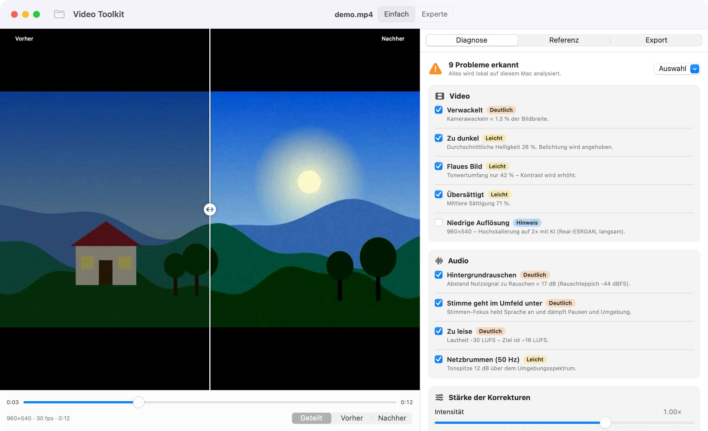

Erst Diagnose, dann Reparatur
Beim Laden untersucht Video Toolkit das Video und schlägt konkrete Korrekturen vor. Jede lässt sich einzeln zu- und abschalten, ein Regler skaliert die Stärke. Im Experten-Modus stellst du alles selbst ein.

Was erkannt und repariert wird
Die Analyse misst, statt zu raten – und erklärt in Klartext, was auffällt.
Licht & Farbe
Zu dunkel oder überbelichtet, abgesoffene Schatten, ausgebrannte Lichter, Gegenlicht bei Gesichtern (Apple Vision), flaues Bild, Farbstich, blasse Farben.
Rauschen & Schärfe
Bildrauschen räumlich und zeitlich mindern, Schärfe über einen Re-Blur-Test beurteilen und gezielt nachschärfen.
Wackeln & Flackern
Stabilisierung über eine geglättete Kamerabahn, Helligkeitsflackern wird szenenweise ausgeglichen.
Referenzbild
Spiele ein Bild ein, dessen Look dein Video bekommen soll – Farben und Tonwerte werden per 3D-LUT angeglichen.
Ton & Stimme
Rauschen, Netzbrummen (50/60 Hz), Dröhnen, Mulm, S-Laute, Lautstärkeschwankungen, Übersteuerung. Stimme klarer und in den Vordergrund, Lautheit auf −16 LUFS.
Experten-Modus
Alle Parameter per Regler, 5-Band-EQ, Probehören von Original und Bearbeitung, Vorher/Nachher-Vergleich.
Lokale KI statt Cloud
Die Modelle sind in der App eingebettet und laufen über Core ML auf dem Neural Engine bzw. der GPU. Die App ist mit App-Sandbox ohne Netzwerk-Berechtigung signiert – macOS verhindert damit technisch jede Internetverbindung.
| Aufgabe | Modell | Hinweis |
|---|---|---|
| Stimme entrauschen | DeepFilterNet3 (Core ML, INT8, 2 MB) | ca. 6× Echtzeit |
| Hochskalieren | Real-ESRGAN x4v3 (Core ML) | langsam, sichtbar mehr Detail |
| Gesichter (Gegenlicht) | Apple Vision | on-device |
| Stabilisierung | Apple Vision Registrierung | on-device |
Selbst bauen
Es genügen die Command Line Tools – Xcode ist nicht nötig.